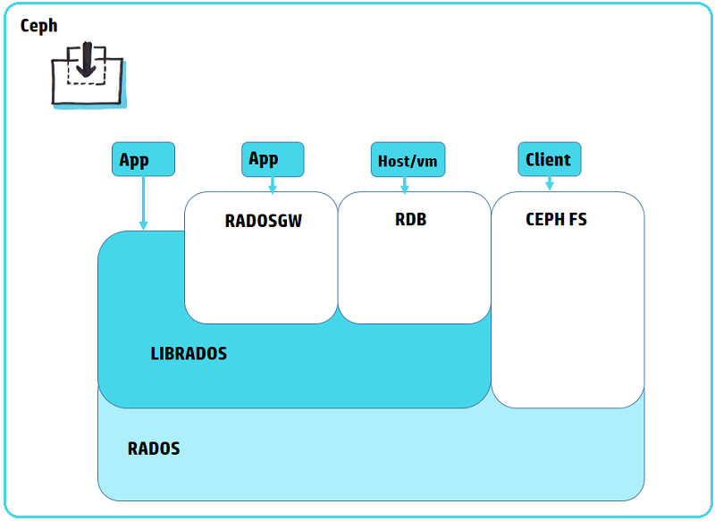

Ceph
Ceph’s software libraries provide client applications with direct access to the RADOS object-based storage system, and also provide a foundation for some of Ceph’s advanced features, including RADOS Block Device (RBD), RADOS Gateway, and the Ceph File System.LIBRADOS
The Ceph librados software libraries enable applications written in C, C++, Java, Python and PHP to access Ceph’s object storage system using native APIs. The librados libraries provide advanced features, including:- partial or complete reads and writes
- snapshots
- atomic transactions with features like append, truncate and clone range
- object level key-value mappings
REST GATEWAY
RADOS Gateway provides Amazon S3 and OpenStack Swift compatible interfaces to the RADOS object store.BLOCK STORAGE
Ceph’s object storage system isn’t limited to native binding or RESTful APIs. You can mount Ceph as a thinly provisioned block device! When you write data to Ceph using a block device, Ceph automatically stripes and replicates the data across the cluster. Ceph’s RADOS Block Device (RBD) also integrates with Kernel Virtual Machines (KVMs), bringing Ceph’s virtually unlimited storage to KVMs running on your Ceph clients. How it Works Ceph RBD interfaces with the same Ceph object storage system that provides the librados interface and the Ceph FS file system, and it stores block device images as objects. Since RBD is built on top of librados, RBD inherits librados capabilites, including read-only snapshots and revert to snapshot. By striping images across the cluster, Ceph improves read access performance for large block device images.Benefits
Thinly provisioned Resizable images Image import/export Image copy or rename Read-only snapshots Revert to snapshots Ability to mount with Linux or QEMU KVM clients!FILE SYSTEM
Ceph’s object storage system offers a significant feature compared to many object storage systems available today: Ceph provides a traditional file system interface with POSIX semantics. Object storage systems are a significant innovation, but they complement rather than replace traditional file systems. As storage requirements grow for legacy applications, organizations can configure their legacy applications to use the Ceph file system too! This means you can run one storage cluster for object, block and file-based data storage. How it Works Ceph’s file system runs on top of the same object storage system that provides object storage and block device interfaces.The Ceph metadata server cluster provides a service that maps the directories and file names of the file system to objects stored within RADOS clusters. The metadata server cluster can expand or contract, and it can rebalance the file system dynamically to distribute data evenly among cluster hosts. This ensures high performance and prevents heavy loads on specific hosts within the cluster.